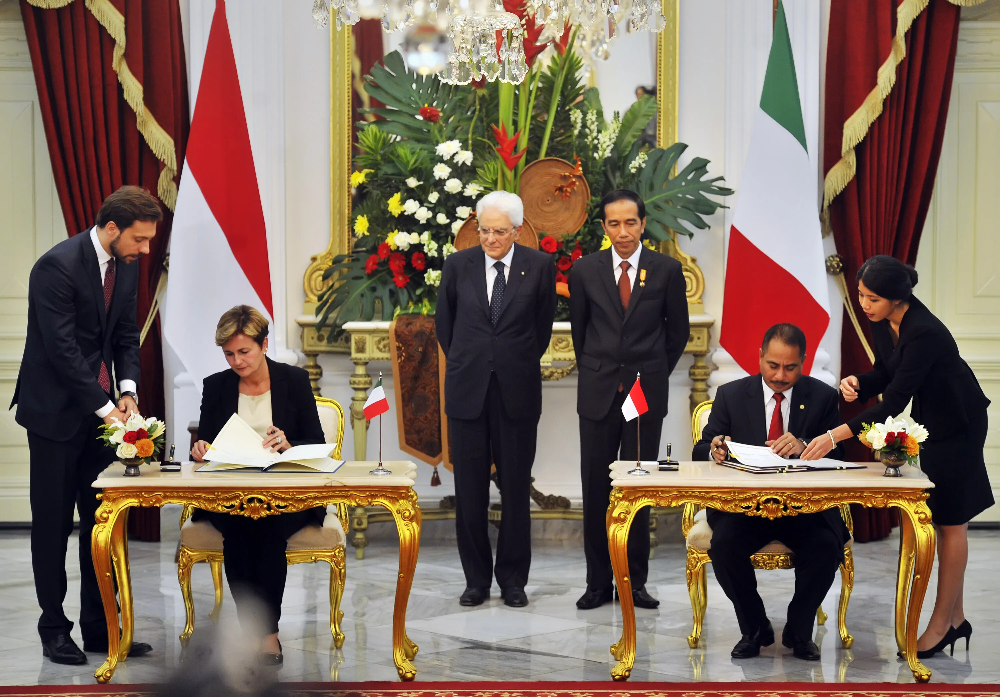

Hubungan Indonesia dengan Italia merupakan hubungan bilateral antara Indonesia dengan Italia. Italia menunjukan keinginan kuat untuk meningkatkan hubungan dengan Indonesia, terutama di bidang pemahaman budaya dan perdagangan.Indonesia mengakui lokasi strategis Italia dan peran penting Italia di wilayah Laut Tengah, sementara Italia menyukai hubungan dengan Indonesia dan melihat Indonesia sebagai pemimpin Asia Tenggara.
Hubungan kedua negara tidak hanya penting untuk menjembatani komunitas di kedua wilayah yaitu Uni Eropa dan Perhimpunan Bangsa-Bangsa Asia Tenggara, tetapi juga penting sebagai dialog antara budaya dan antara keyakinan, karena Indonesia merupakan negara dengan umat muslim terbesar di dunia dan Italia merupakan jantung dari Gereja Katolik Roma.
Indonesia memiliki kedutaaan besar di Roma yang juga melayani Malta, Siprus, San Marino, dan organisasi internasional seperti Organisasi Pangan dan Pertanian, Dana Internasional untuk Pengembangan Pertanian, Program Pangan Dunia, dan UNIDROIT, sementara Italia memiliki kedutaan besar di Jakarta.


.png)